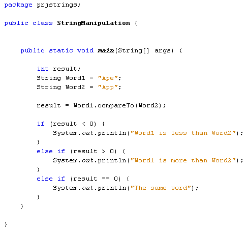

You don't need to start a new project for this: simply comment out (or delete) the code you already have. Now add the following code:

We've set up two string variables to contain the words "Ape" and "App". The compareTo method is then this line in the code above:
result = Word1.compareTo( Word2 );
The compareTo method returns a value. The value that is returned will be greater than 0, less than 0, or have a value of zero. If Word1 comes before Word2, then the value that is returned will be less than 0. If Word1 comes after Word2 then the value returned will be greater than 0. If the two words are identical then a value of 0 will be returned.
So you need to assign the value that compareTo returns to a variable. We're placing the value in an integer variable called result. The IF Statements in the code simply tests to see what is in the result variable
However, when you compare one string of text with another, Java compares the underlying hexadecimals values, rather than the actual letters. Because uppercase letters have a lower hexadecimal value than lowercase ones, an uppercase letter "A" in "App" will come before a lowercase letter "a" in "ape". Try it for yourself. Change "Ape" to "ape" in your code. The Output will read "Word1 is more than Word2", meaning that Java will place the word "ape" after the word "app" alphabetically.
To solve the problem, there's a related method called compareToIgnoreCase.
As its name suggest, lowercase and uppercase letter are ignored. Use this and
"ape will come before "App" alphabetically.
Next up, we'll look at another useful String method - indexOf.